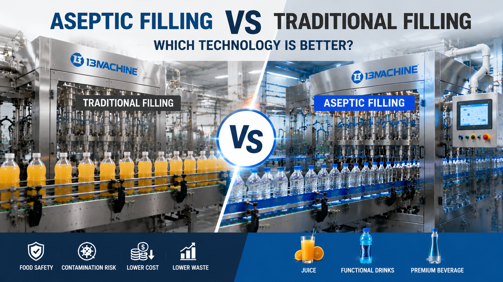

Aseptic Filling vs Traditional Filling: Which Technology Is Better for Beverage Production?

Summary
Choosing the right filling technology is one of the most important decisions when designing a modern beverage production line.
Different beverage products require different levels of hygiene control, shelf life, and production flexibility.
Traditional filling technology has been widely used for:
Bottled water
Standard beverages
High-volume products
However, as the beverage market develops, more manufacturers are adopting aseptic filling technology for:
Juice
Functional drinks
Nutritional beverages
Premium beverage products
Aseptic filling provides higher hygiene standards, longer shelf life, and better protection for sensitive products.
This article compares:
Traditional Filling
VS
Aseptic Filling
and explains how beverage manufacturers can select the right filling technology based on product requirements, investment strategy, and future market development.
Technology
- Understanding Beverage Filling Technology
- The filling process is one of the most critical stages in beverage manufacturing.
- It directly affects:
- Product safety
- Shelf life
- Quality stability
- Production efficiency
- Modern beverage factories mainly use two filling approaches:
- 1. Traditional Filling Technology
- Traditional filling is commonly used for:
- Bottled water
- Carbonated drinks
- High-volume beverages
- Basic process:
- Bottle Preparation
- ↓
- Product Filling
- ↓
- Capping
- ↓
- Packaging
- Characteristics:
- Mature technology
- High production efficiency
- Lower investment cost
- 2. Aseptic Filling Technology
- Aseptic filling is designed for products requiring strict hygiene control.
- Process:
- Product Sterilization
- ↓
- Container Sterilization
- ↓
- Aseptic Filling
- ↓
- Sterile Sealing
- Characteristics:
- Higher contamination control
- Longer shelf life
- Suitable for sensitive beverages
- 3. Integrated Blow Fill Cap Technology
- Modern aseptic beverage factories increasingly combine:
- Bottle blowing
- Filling
- Capping
- into one integrated production system.
- Benefits:
- Less human contact
- Cleaner production environment
- Higher efficiency
Challenge
Why Beverage Manufacturers Need to Choose the Right Filling Technology
When investing in a beverage factory, many companies focus on production capacity first.
However, filling technology determines:
Product quality
Shelf life
Market positioning
Future expansion capability
Choosing the wrong filling technology can create long-term problems.
Challenge 1: Different Products Have Different Requirements
A bottled water factory and a functional beverage factory have completely different needs.
For example:
Bottled water:
Simple formula
High volume
Lower contamination risk
Functional drinks:
Sensitive ingredients
Higher quality requirements
Longer shelf life expectations
Challenge 2: Balancing Investment and Product Value
Aseptic technology requires higher investment.
Factory owners must evaluate:
Equipment cost
Product value
Market opportunity
Long-term return
Challenge 3: Maintaining Product Safety
Beverage manufacturers must control:
Microbial contamination
Filling environment
Production hygiene
Especially for:
Juice
Dairy beverages
Nutritional drinks
Challenge 4: Future Market Development
Consumer demand is changing.
More customers are looking for:
Healthy beverages
Functional products
Premium drinks
Factories need technology that supports future growth.
Solution
Traditional Filling vs Aseptic Filling: Detailed Comparison
1. Production Environment
Traditional Filling
Production environment:
Standard hygienic conditions
Controlled production process
Suitable for:
Water
Carbonated drinks
Aseptic Filling
Production environment:
Highly controlled sterile environment
Advanced contamination prevention
Suitable for:
Juice
Functional drinks
Premium beverages
2. Product Shelf Life
Traditional Filling
Usually depends on:
Preservatives
Refrigeration
Product characteristics
Aseptic Filling
Advantages:
Longer shelf life
Better product protection
Reduced dependence on preservatives
3. Product Quality
Traditional Filling
Advantages:
Reliable
Mature technology
Cost-effective
Aseptic Filling
Advantages:
Better preservation of product characteristics
Higher hygiene level
4. Investment Requirement
Traditional Filling
Advantages:
Lower initial investment
Faster payback for high-volume products
Aseptic Filling
Advantages:
Higher product value
Better market positioning
5. Suitable Industries
Beverage Type Recommended Technology
Bottled Water Traditional Filling
Carbonated Drinks Traditional Filling
Juice Aseptic Filling
Functional Drinks Aseptic Filling
Nutritional Beverage Aseptic Filling
Premium Beverage Aseptic Filling
Workflow & Layout
📌 Traditional Beverage Filling Workflow
Bottle Preparation
↓
Product Filling
↓
Capping
↓
Labeling
↓
Packaging
↓
Warehouse
📌 Aseptic Filling Workflow
Product Sterilization
↓
Bottle Sterilization
↓
Aseptic Environment
↓
Filling
↓
Sterile Capping
↓
Packaging
↓
Warehouse
📌 Integrated Aseptic Beverage Factory Layout
Raw Material
↓
Processing System
↓
Sterilization
↓
Bottle Production
↓
Aseptic Filling
↓
Packaging
↓
Automated Warehouse
Results & ROI
- How the Right Filling Technology Improves Business Performance
- 1. Longer Product Shelf Life
- Aseptic technology allows manufacturers to develop products with:
- Longer storage time
- Wider distribution range
- Reduced product loss
- 2. Higher Product Value
- Premium beverages can achieve:
- Better market positioning
- Higher selling price
- Stronger brand differentiation
- 3. Reduced Quality Risk
- Advanced filling technology reduces:
- Contamination risk
- Product rejection
- Customer complaints
- 4. Better Production Flexibility
- Modern systems support:
- Multiple beverage categories
- New product development
- Market expansion
- 5. Long-Term Investment Return
- Although aseptic filling requires higher investment
- it can create value through:
- Higher product margins
- Lower quality losses
- Stronger market competitiveness
- 📌Example:
- A factory producing standard bottled water:
- Traditional filling may provide the best ROI.
- However:
- A factory developing premium juice or functional beverages:
- Aseptic filling may create significantly higher business value.
Equipment List
- A modern beverage filling project may include:
- 📌 Beverage Processing System
- Water treatment system
- Mixing system
- CIP system
- Sterilization system
- 📌 Bottle Production System
- PET preform handling
- Blow molding machine
- Bottle conveyor system
- 📌 Filling System
- Traditional:
- Filling machine
- Capping machine
- Aseptic:
- Sterile filling machine
- Sterilization system
- Clean production environment
- 📌 Packaging System
- Labeling machine
- Shrink wrapping machine
- Cartoning machine
- Palletizing system
- 📌 Automation System
- PLC control
- HMI
- MES integration
- 📌 Warehouse System
- Conveyor
- AGV
- ASRS warehouse
Project Overview / Opening
Selecting Filling Technology Is a Strategic Factory Decision
A beverage production line is a long-term investment.
The filling technology selected today may affect:
Product portfolio
Production capability
Market competitiveness
Traditional filling and aseptic filling are not competitors.
They are solutions designed for different manufacturing goals.
The right choice depends on:
Product type
Market strategy
Production capacity
Investment plan
Key Points
- Aseptic Filling vs Traditional Filling: Five Key Differences
- 1. Hygiene Level
- Aseptic filling provides higher contamination control.
- 2. Product Range
- Traditional:
- Water
- Carbonated drinks
- Aseptic:
- Juice
- Functional beverages
- Premium products
- 3. Investment
- Traditional:
- Lower initial investment.
- Aseptic:
- Higher investment with higher product value potential.
- 4. Shelf Life
- Aseptic technology improves product preservation.
- 5. Future Competitiveness
- Aseptic systems support advanced beverage markets.
Implementation / Workflow
How to Select the Right Beverage Filling Solution
Step 1: Analyze Product Requirements
Evaluate:
Beverage type
Ingredients
Shelf life requirements
Step 2: Define Production Goals
Determine:
Capacity
Market positioning
Future products
Step 3: Compare Technology Options
Evaluate:
Traditional filling
Aseptic filling
Step 4: Design Complete Production Solution
Develop:
Process flow
Equipment configuration
Factory layout
Step 5: Implement Production System
Complete:
Equipment manufacturing
FAT testing
Installation support
Production startup
Customer Value / Results
Selecting the correct filling technology helps manufacturers:
⭐ Reduce Production Risk
Avoid unsuitable technology decisions.
⭐ Improve Product Quality
Maintain stable beverage performance.
⭐ Expand Product Categories
Support new beverage opportunities.
⭐ Improve Market Competitiveness
Create higher-value products.
⭐ Build Future-Ready Factories
Prepare for changing consumer demand.
Conclusion / Next Step
The decision between aseptic filling and traditional filling depends on more than equipment selection.
It requires understanding:
Product characteristics
Market positioning
Factory investment strategy
Long-term business goals
Traditional filling remains an excellent choice for high-volume standard beverages.
Aseptic filling provides greater opportunities for premium, functional, and sensitive beverage products.
We help manufacturers worldwide design, source, integrate, and deliver industrial automation projects from China's manufacturing ecosystem.
Our services include:
Beverage factory planning
Filling technology evaluation
Production line integration
Equipment supplier coordination
Smart factory automation solutions
Whether you are building a new beverage production facility or upgrading an existing factory, our team can help develop the right manufacturing solution.
📩 Contact us through our website Contact page and discuss your beverage production project requirements.
SEO Title
Aseptic Filling vs Traditional Filling: Which Technology Is Better for Beverage Production?
SEO Description
Choosing the right filling technology is one of the most important decisions when designing a modern beverage production line.
Different beverage products require different levels of hygiene control, shelf life, and production flexibility.
Traditional filling technology has been widely used for:
Bottled water
Standard beverages
High-volume products
However, as the beverage market develops, more manufacturers are adopting aseptic filling technology for:
Juice
Functional drinks
Nutritional beverages
Premium beverage products
Aseptic filling provides higher hygiene standards, longer shelf life, and better protection for sensitive products.
This article compares:
Traditional Filling
VS
Aseptic Filling
and explains how beverage manufacturers can select the right filling technology based on product requirements, investment strategy, and future market development.
Related Blog
Start with Your Business Challenge
Tell us about your warehouse, factory, or production requirements. We'll help you explore practical automation solutions and relevant project references.